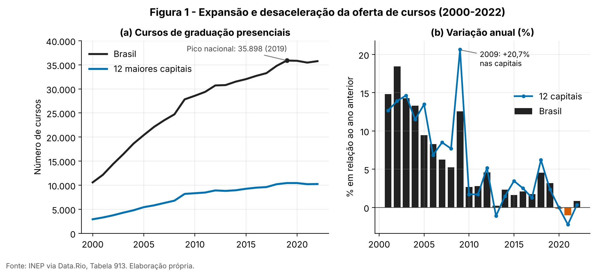
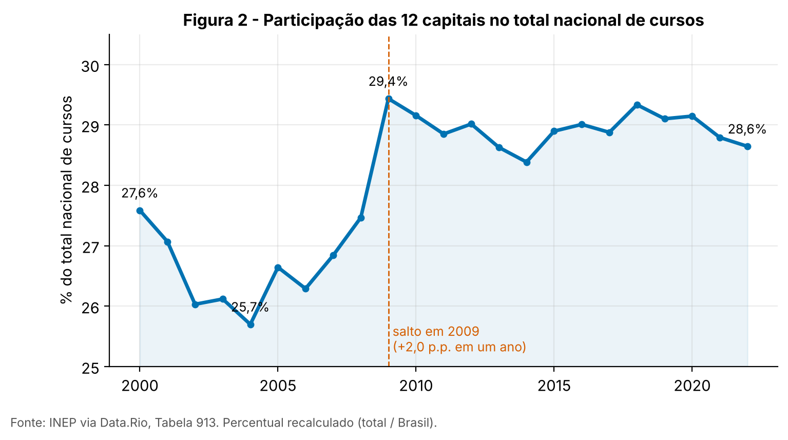
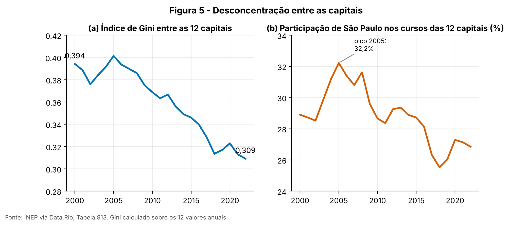
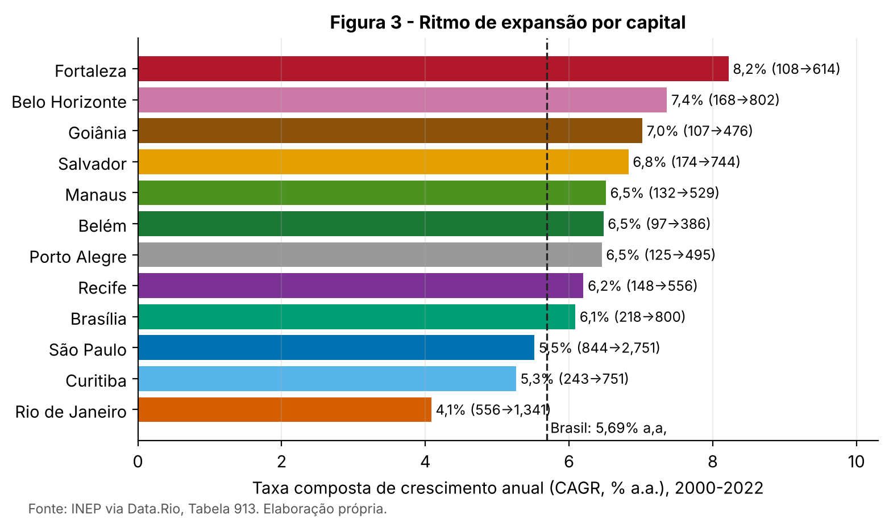
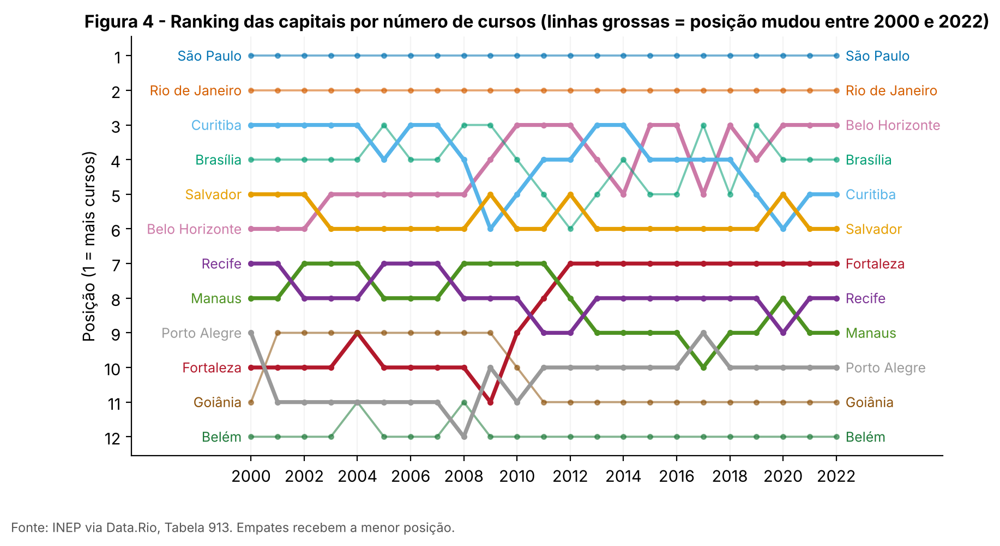
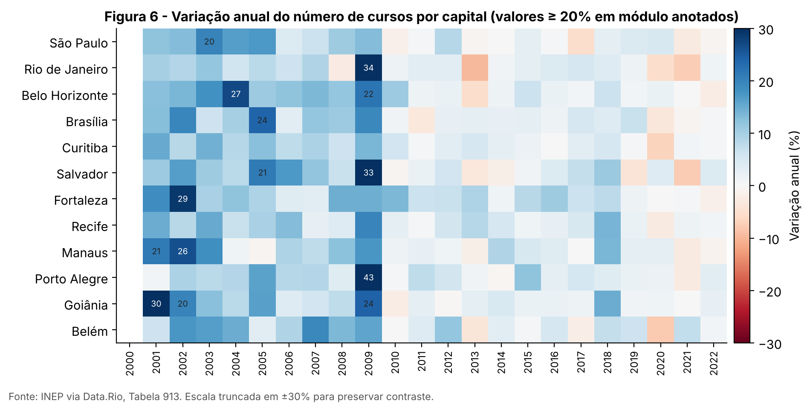

Resumo
Este estudo analisa a evolução do número de cursos de graduação presenciais no Brasil e nas 12 maiores capitais entre 2000 e 2022, a partir da Tabela 913 do Data.Rio, construída com dados do INEP. Foi desenvolvido um pipeline reprodutível em Python que converte 23 abas anuais em formato tidy, valida a consistência dos totais e deriva métricas de crescimento, participação, ranking e concentração. Os resultados mostram que a oferta nacional passou de 10.585 para 35.765 cursos (+237,9%), com expansão de 11,3% ao ano até 2009, desaceleração para 2,6% ao ano na década seguinte e retração em 2020–2021. A participação das capitais permaneceu entre 25,7% e 29,4% do total, com um degrau comum a todas as capitais em 2009. Entre as capitais, o crescimento foi inversamente associado ao nível inicial (ρ de Spearman = −0,69), e o índice de Gini caiu de 0,394 para 0,309, indicando desconcentração. O Rio de Janeiro apresentou o menor ritmo de expansão (4,1% ao ano) e perdeu 11,1% dos cursos desde o pico de 2019. Os dados medem cursos, não matrículas, e as explicações para as inflexões permanecem como hipóteses.
1. Introdução
A oferta de cursos de graduação é um indicador direto da capacidade do sistema de ensino superior de atender à demanda por qualificação. Entre 2000 e 2022 o Brasil viveu um ciclo de expansão, estímulo a financiamento estudantil, interiorização e, mais recentemente, a crise sanitária. Entender se esse ciclo foi uniforme entre as grandes capitais, onde se concentram universidades tradicionais e mercados de trabalho qualificados, ajuda a discutir desigualdades regionais de acesso. O recorte também é de interesse local: a base é publicada pelo Data.Rio, portal de dados abertos da cidade do Rio de Janeiro, que permite comparar a capital fluminense com as demais.
O estudo responde a três perguntas de pesquisa:
2. Metodologia e Pipeline de Dados
2.1 Fonte e granularidade
Os dados vêm da Tabela 913 – Ensino Superior – Número e distribuição percentual dos cursos de graduação presenciais – Brasil e suas 12 maiores capitais (Data.Rio), com fonte primária no Cadastro das Instituições de Educação Superior e na Sinopse do Censo da Educação Superior, do INEP. O arquivo 913.xls traz uma aba por ano (2000–2022). Cada aba contém o total do Brasil, o agregado “12 Capitais” e as 12 capitais, com número de cursos e percentual sobre o Brasil. A granularidade é ano × localidade: 23 anos × 14 linhas = 322 observações. A unidade é o curso (não matrícula, vaga ou instituição) e apenas a modalidade presencial.
2.2 Tratamento
- Estrutura: cada aba tem cabeçalho institucional e rodapé; as linhas são localizadas pelo conteúdo (“Capitais”, “Fonte”), não por posição. A ordem das capitais muda a cada ano, então a chave é o nome.
- Tipos: em 2022 os totais vieram como texto com espaço de milhar (
"35 765"); foram convertidos para inteiro. Percentuais são recalculados comototal / Brasil × 100(erro máximo frente ao oficial: 0,0495 p.p., arredondamento). - Ausentes e descartes: 0 valores nulos nos totais; a única aba descartada (
ESRI_MAPINFO_SHEET, vazia) é registrada emqa_report.json. Nada é imputado. - Validação: a soma das 12 capitais coincide com o agregado informado em todos os 23 anos; não há duplicatas ano–localidade.
- Métricas derivadas: variação anual, índice base 2000, CAGR, ranking, participação no Brasil e nas 12 capitais, Gini, HHI, coeficiente de variação e outliers por z-score robusto (mediana/MAD).
def extrair_aba(bruto, ano):
col0 = bruto.iloc[:, 0].astype(str).str.strip()
idx_cab = col0[col0.eq("Capitais")].index # localiza pelo conteúdo
corpo = bruto.iloc[idx_cab[0] + 1:, :3].copy()
corpo.columns = ["localidade", "total_raw", "pct_raw"]
corpo = corpo.dropna(subset=["localidade"])
corpo["total_cursos"] = corpo["total_raw"].map(parse_inteiro) # '35 765' -> 35765
...
def construir_metricas(longo):
g = df.groupby("localidade")["total_cursos"]
df["var_pct_anual"] = g.pct_change() * 100
df["indice_base_2000"] = df["total_cursos"] / g.transform("first") * 100
df["pct_brasil_calc"] = df["total_cursos"] / df["ano"].map(brasil) * 100O pipeline completo está em src/etl.py e é determinístico: a mesma entrada produz as mesmas saídas, e o SHA-256 do arquivo bruto é gravado no relatório de qualidade.
3. Resultados e Discussão
3.1 RQ1 — Evolução e inflexões
O total nacional passou de 10.585 (2000) para 35.765 cursos (2022), +237,9% (5,69% ao ano). As 12 capitais foram de 2.920 para 10.245 (+250,9%; 5,87% ao ano). O ritmo, porém, não foi constante: de 2000 a 2009 o crescimento foi de 11,3% ao ano no Brasil e 12,1% nas capitais; de 2009 a 2019, de 2,6% e 2,5%; e de 2019 a 2022, de −0,1% e −0,7%. A variação anual mediana das capitais caiu de 10,7% (2001–2008) para 2,7% (2010–2019).

Duas inflexões se destacam. 2009: o Brasil ganhou 3.108 cursos (+12,6%), enquanto as capitais ganharam 1.402 (+20,7%), o maior salto da série nas capitais; as 12 capitais cresceram nesse ano (de +12,9% a +43,0%). Quando todas as unidades se movem juntas, é plausível um fator sistêmico, como políticas de expansão e financiamento do período (ProUni, Reuni, Fies) ou mudanças de registro no cadastro do INEP — hipóteses que este estudo não testa. 2020–2021: o total nacional caiu 1,2% entre 2019 e 2021 (35.898 → 35.465) e as capitais 2,3%, com recuperação parcial em 2022, coerente com o período pandêmico, embora os dados não permitam atribuir causa.
Gráfico interativo 1. Alterne entre número de cursos e índice (2000 = 100); clique na legenda para isolar capitais.
3.2 RQ2 — Participação e concentração
A fatia das 12 capitais no total nacional oscilou entre 25,7% (2004) e 29,4% (2009), terminando em 28,6% em 2022 (27,6% em 2000). Não houve, portanto, concentração nem perda sistemática de peso: o “resto do Brasil” cresceu a 5,62% ao ano, ritmo muito próximo ao das capitais (5,87%). O principal movimento é o degrau de +2,0 p.p. em 2009, discutido acima.

Já entre as capitais houve desconcentração: o índice de Gini caiu de 0,394 (2000) para 0,309 (2022), o coeficiente de variação de 0,93 para 0,76 e o HHI de 1.494 para 1.272. A parcela de São Paulo nos cursos das 12 capitais subiu a 32,2% em 2005 e recuou para 26,9% em 2022.

3.3 RQ3 — Ritmos de crescimento e o caso do Rio de Janeiro
Fortaleza (8,2% ao ano; 108 → 614), Belo Horizonte (7,4%) e Goiânia (7,0%) lideraram o crescimento; Curitiba (5,3%) e o Rio de Janeiro (4,1%) ficaram nas últimas posições entre as capitais. Há associação negativa entre o nível inicial e o crescimento: ρ de Spearman = −0,69 (p = 0,014) e r de Pearson entre log(nível inicial) e CAGR = −0,73 (p = 0,007), com n = 12, ou seja, convergência: capitais menores crescem mais rápido. Com apenas 12 observações, trata-se de evidência exploratória.

O Rio de Janeiro manteve o 2º lugar durante os 23 anos, mas sua distância para São Paulo aumentou: a razão RJ/SP caiu de 0,66 para 0,49 e a participação do Rio no total nacional foi de 5,25% para 3,75%. O Rio chegou a 1.509 cursos em 2019 e terminou 2022 com 1.341 (−11,1%), a maior queda desde o pico entre as capitais. A série também registra retração de 9,8% em 2013 (1.395 → 1.258), sinalizada como outlier (z robusto = −3,5). Uma explicação, que não pode ser verificada com estes dados agregados, é a consolidação ou o encerramento de cursos em vez de menor demanda; seriam necessários dados por instituição e matrículas.

3.4 Outliers
Das 264 variações anuais capital-ano, 14 atingem +20% ou mais, e todas ocorrem até 2009: cinco delas no próprio 2009 (Porto Alegre +43,0%, Rio +33,6%, Salvador +33,3%, Goiânia +24,4%, Belo Horizonte +21,9%); as demais nos primeiros anos (por exemplo, Goiânia +29,9% em 2001). O mapa de calor evidencia o padrão: as cores intensas formam uma coluna vertical em 2009, e o período pós-2010 é dominado por variações pequenas.

4. Conclusão
(RQ1) A oferta de cursos presenciais cresceu mais de três vezes entre 2000 e 2022, mas em três regimes: expansão acelerada até 2009, crescimento lento até 2019 e retração em 2020–2021. (RQ2) As 12 capitais mantiveram participação entre 26% e 29%, com degrau em 2009, mas a distribuição entre elas ficou menos concentrada (Gini de 0,394 para 0,309). (RQ3) Capitais menores cresceram mais; o Rio de Janeiro teve o menor CAGR e a maior perda desde o pico.
Limitações. (i) A unidade é o curso, sem informação de vagas, matrículas ou EAD. (ii) Os dados não são normalizados por população. (iii) A fonte e a data de acesso do INEP variam entre abas, e possíveis mudanças de metodologia (como em 2009) não são documentadas. (iv) A amostra de 12 capitais limita a inferência estatística.
Trabalhos futuros. Normalizar por população e matrículas, incorporar a modalidade EAD, desagregar por categoria administrativa (pública/privada) e área do curso, e testar formalmente a quebra estrutural de 2009 e o efeito da pandemia.
5. Disponibilidade dos Dados e Declaração FAIR
Este trabalho segue os princípios FAIR: Findable (README com resumo, palavras-chave e link para a fonte; autoria e instituição identificadas); Accessible (repositório público, sem credenciais ou serviços pagos; artigo no GitHub Pages); Interoperable (dados processados em csv.gz/csv/json e dicionário em data/data_dictionary.md); Reusable (licença MIT para o código, CC BY 4.0 para dados e texto, requirements.txt com versões fixas).
git clone https://github.com/SEU-USUARIO/cursos-graduacao-capitais.git
cd cursos-graduacao-capitais
python -m venv .venv && source .venv/bin/activate # Windows: .venv\Scripts\activate
pip install -r requirements.txt
python -m src.etl # gera data/processed/
python -m src.figures # gera docs/assets/ (PNG + data.js)6. Referências
- DATA.RIO. Tabela 913 – Ensino Superior – Número e distribuição percentual dos cursos de graduação presenciais – Brasil e suas 12 maiores capitais. Rio de Janeiro: Prefeitura da Cidade do Rio de Janeiro. Disponível em: https://www.data.rio. Acesso em: nov. 2026.
- INSTITUTO NACIONAL DE ESTUDOS E PESQUISAS EDUCACIONAIS ANÍSIO TEIXEIRA (INEP). Cadastro das Instituições de Educação Superior e Sinopse do Censo da Educação Superior. Brasília: INEP. Disponível em: http://www.inep.gov.br.
- WILKINSON, M. D. et al. The FAIR Guiding Principles for scientific data management and stewardship. Scientific Data, v. 3, art. 160018, 2016.
- MCKINNEY, W. Data structures for statistical computing in Python. In: PYTHON IN SCIENCE CONFERENCE, 9., 2010. Proceedings... 2010. p. 56–61.
- HUNTER, J. D. Matplotlib: a 2D graphics environment. Computing in Science & Engineering, v. 9, n. 3, p. 90–95, 2007.
- PLOTLY TECHNOLOGIES INC. Collaborative data science. Montreal, 2015. Disponível em: https://plot.ly.
- VIRTANEN, P. et al. SciPy 1.0: fundamental algorithms for scientific computing in Python. Nature Methods, v. 17, p. 261–272, 2020.